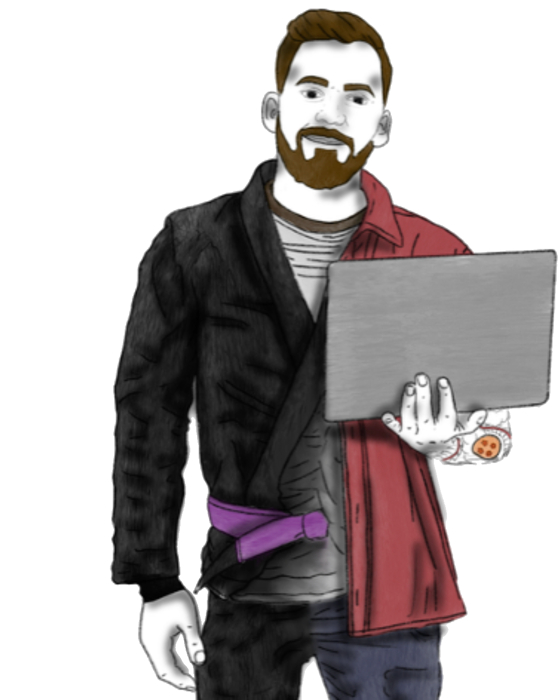
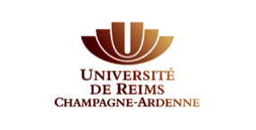
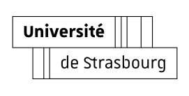

Sociologie du corps
Les expériences sensibles et l'incorporation des normes, au plus près du corps des enquêté·es.
Docteur en sociologie, j'explore les liens entre corps, violence et socialisation à travers une approche ethnographique incarnée. Chercheur associé au sein des laboratoires LinCS et PSMS, j'enseigne en STAPS et en sciences sociales, tout en développant des projets mêlant sport, intervention sociale et recherche.

Les expériences sensibles et l'incorporation des normes, au plus près du corps des enquêté·es.
Les formes ordinaires de la violence et les dynamiques de domination.
Comment la lutte met le genre « à rude épreuve » et redéfinit les rapports sociaux de sexe.
Ethnographie incarnée et place du corps du chercheur dans l'enquête de longue durée.
Dans le cadre du festival international Pint of Science, une immersion dans les coulisses de l'enquête ethnographique sur le jiu-jitsu brésilien et une réflexion sur les significations sociales du combat, de l'engagement corporel et de la reconnaissance entre pratiquants.
Enregistrée lors des Journées de Réflexion et de Recherches sur les Sports de Combat et les Arts Martiaux, cette conférence présente les principaux résultats de la thèse : socialisation combattante, rapports à la violence et expériences corporelles observés dans plusieurs clubs français de jiu-jitsu brésilien.

